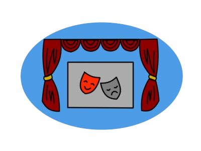

Театр Садовського у Вінниці – це один із найстаріших театрів в Україні, заснований у 1910 році відомим актором і режисером Миколою Садовським. Він став культурним центром Поділля, де ставилися драматичні та музичні вистави українських авторів. Архітектура театру поєднує елементи неокласики та модерну, що надає йому особливої естетичної привабливості. Сьогодні театр продовжує бути важливою частиною культурного життя міста, залучаючи глядачів своїми різноманітними виставами.
Квитки на вистави, концерти та інші культурні заходи можна зручно придбати через афіші, що публікуються як в інтернеті, так і в друкованих виданнях. Онлайн-афіші дозволяють не лише ознайомитися з репертуаром, але й швидко забронювати або купити квитки. Багато сайтів пропонують зручні фільтри для вибору подій за датою, жанром або міісцем проведення. Це робить процес покупки квитків простим та доступним для широкої аудиторії.

Вистава — це театральне дійство, де актори на сцені втілюють сюжет твору через гру, емоції та взаємодію з глядачем. Кожна вистава має свою унікальну постановку, що включає декорації, костюми та музичний супровід, які створюють атмосферу і підкреслюють тематику твору. Вистави можуть бути різних жанрів — від комедій і драм до мюзиклів і трагедій, залучаючи глядачів емоційним зануренням у події, що розгортаються на сцені.